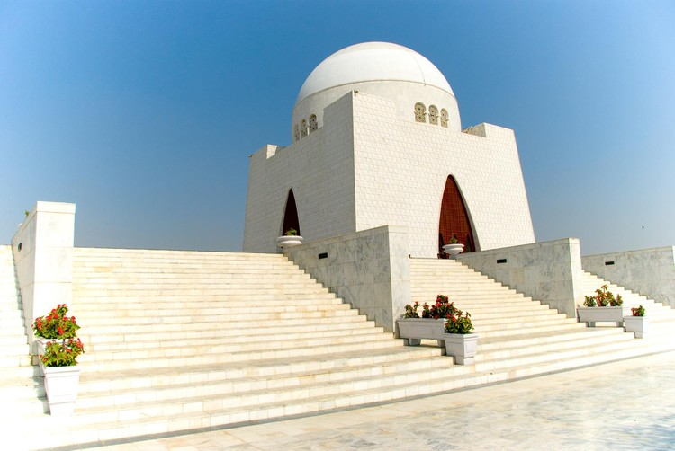

Karachi
Karachi is a popular tourist destination for domestic and international tourists. It is the
capital of Sindh and the biggest metropolitan city in Pakistan. It is known for its diverse
culture, rich cuisine, historical sites, advanced education system,
various farmhouses, top cinemas, best shopping malls, and, of course, the beautiful deep
blue sea.
Clifton Beach is one of the most popular tourist destinations in Karachi, a large
crowd gathers here, especially on weekends and public holidays. However, there are also many
other attractions in Karachi like Clifton
Beach, Mazar-e-Quaid, Charna Island, Mohatta Palace, Haleji Lake, Frere Hall, Turtle Beach,
and Port Grand, Karachi Zoo, Quaid e Azam Museum, Chaukhandi Tombs, Empress Market and many
more.
Mazar-e-Quaid, Charna Island, Mohatta Palace, Haleji Lake, Frere Hall, Turtle
Beach, and Port Grand, Karachi Zoo, Quaid e Azam Museum, Chaukhandi Tombs, Empress Market
and many more.